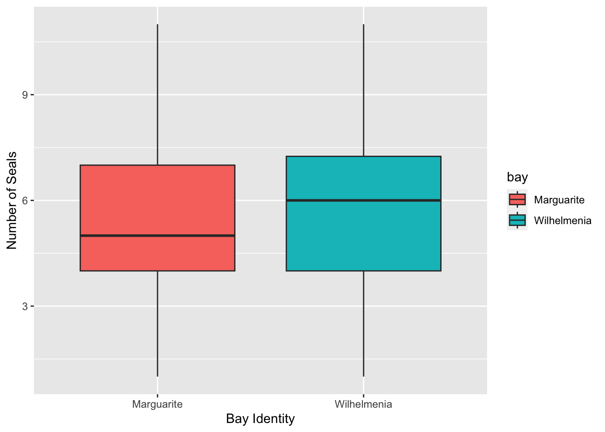
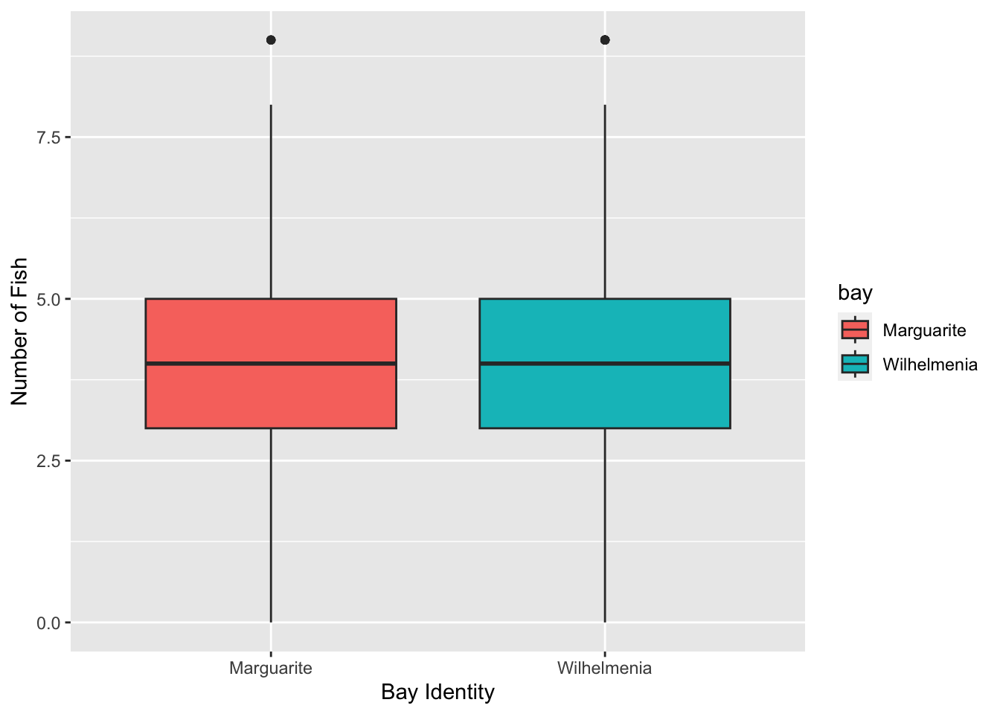

library("tidyverse")── Attaching core tidyverse packages ──────────────────────── tidyverse 2.0.0 ──
✔ dplyr 1.1.3 ✔ readr 2.1.4
✔ forcats 1.0.0 ✔ stringr 1.5.0
✔ ggplot2 3.4.3 ✔ tibble 3.2.1
✔ lubridate 1.9.3 ✔ tidyr 1.3.0
✔ purrr 1.0.2
── Conflicts ────────────────────────────────────────── tidyverse_conflicts() ──
✖ dplyr::filter() masks stats::filter()
✖ dplyr::lag() masks stats::lag()
ℹ Use the conflicted package (<http://conflicted.r-lib.org/>) to force all conflicts to become errorsseals <- read_csv("arctic-seals.csv")Rows: 640 Columns: 5
── Column specification ────────────────────────────────────────────────────────
Delimiter: ","
chr (2): time, bay
dbl (2): area, num_seals
date (1): date
ℹ Use `spec()` to retrieve the full column specification for this data.
ℹ Specify the column types or set `show_col_types = FALSE` to quiet this message.fish <- read_csv("arctic-fish.csv")Rows: 640 Columns: 5
── Column specification ────────────────────────────────────────────────────────
Delimiter: ","
chr (2): time, bay
dbl (2): net, num_fish
date (1): date
ℹ Use `spec()` to retrieve the full column specification for this data.
ℹ Specify the column types or set `show_col_types = FALSE` to quiet this message.# descriptive stats
summarySeals <- seals %>% group_by(bay) %>% summarize(mean(num_seals), sd(num_seals))
summaryFish <- fish %>% group_by(bay) %>% summarize(mean(num_fish), sd(num_fish))
# data visualization: best to do a boxplot or bar chart
sealsPlot <- seals %>%
ggplot(aes(bay, num_seals, fill= bay)) +
geom_boxplot() +
xlab("Bay Identity") +
ylab("Number of Seals")
fishPlot <- fish %>% ggplot(aes(bay, num_fish, fill = bay)) +
geom_boxplot() +
xlab("Bay Identity") +
ylab("Number of Fish")
summarySeals# A tibble: 2 × 3
bay `mean(num_seals)` `sd(num_seals)`
<chr> <dbl> <dbl>
1 Marguarite 5.25 2.10
2 Wilhelmenia 5.95 2.10summaryFish# A tibble: 2 × 3
bay `mean(num_fish)` `sd(num_fish)`
<chr> <dbl> <dbl>
1 Marguarite 3.91 1.76
2 Wilhelmenia 4.16 1.96sealsPlot
fishPlot